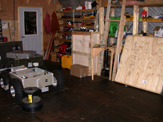

| |<< |< July 26, 2005 >| >>| | |
|
Go to sleep and it's perfectly light out - wake up and it's just the same. And this was at 5:45! It was a small crowd that boarded the LC-130 this morning - just six of us heading onto the Ice today. Jim, myself, two gents going up to fix/replace a UV sensor or something, and two employees heading up to work. One of them, Kathy, will be the station manager from now until November. After the camp officially ends the season in a few weeks, the staff will be reduced down to a skeleton crew of just 4: the station manager, a mechanic, and two science techs to keep the experiments running over the winter. In mid-November, the next crew of four arrives and, after a week of turnover, assumes the duties of managing Summit during the long dark until mid-February, when the next crew arrives. The trip from Kangerlussuaq initially took us up the coast. On one side of the airplane was a rugged and hilly landscape, covered in scarce vegetation in shades of green and brown, dotted with many lakes of meltwater that are trapped in deep stone basins in the hills. On the other side of the plane, one could see the fringes of the icecap - a blanket of white, striated and cracked into a million segments as it melts around the coast. A little further in, and one could discern pools of meltwater and meandering streams connecting them, which had melted through the white crust of the glacier to reveal its turquoise underbelly. Before too long the surface of the ice had turned a flat white; flat and white as far as the eye could see. Summit itself, as a camp, consists of a hanful of buildings, a small tent city, the 15,000 foot runway (skiway, they call it), various storage areas and depots, and huge expanses of snow on all sides. This is not quite as glum and austere as it sounds - some of the coolest things are happening in these buildings, and people are scrambling over one another to get to this snow. Folks here are using the whole of the island (or, at least, the couple of kilometers around (and below) Summit station) as one big laboratory for studying the atmosphere, climate, and chemistry past and present. There are also folks like Jim and myself, who find Greenland and wonderfully extreme environment that is similar to other extreme environments, like Antarctica or Mars. There are some other interesting, non-science or engineering, activities going on here - particular the raising. It snows here quite a bit over the course of a year, and the ice beneath slowly sinks and spreads out towards the coast. So, while the actual elevation may not change much, anything that was once on the surface will eventually be buried. This includes all of the buildings that make up Summit station. So, every few years they need to be relocated to higher ground. Some of the lab facilities and bunk spaces were dragged earlier this season onto a berm of snow raised a bit above the surrounding snow. The main building, called the Big House, which contains that kitchen, social spaces, satellite connection, etc., is actually being raised in place. This has been long overdue - all the pictures of Summit that I could find showed the Big House as just a white sphere half-buried in the snow. In reality, the sphere is the satellite dish enclosure, and resides firmly on the roof of the actual building, which has progressively sunk to the point where the ceiling was several feet below the surrounding snow. The task for the construction crew this summer is to raise it in place so that it is 15-20 feet above the ground. They are doing this by gradually jacking it up a scaffold - a few feet a day. They are about halfway there, and the Big House has a nice view out the window for the first time in years. Speaking of satellite, it is through this connection, which beams out into space, then down to Florida, and then on to the Internet at large, that I am able to provide these updates and field reports to our website. What an amazing world we live in, eh? After traveling some 2500 miles in a number of shipping crates, the Cool Robot once again saw the light of day. Well, almost - it has yet to leave the workshop/garage where we'll be tinkering with it and coaxing it into life for the next day or two. If all goes well, the robot will spend very little time in that garage after those first few days. If we end up spending a lot of time in the workshop, it will mean that something isn't working, and we won't be out and about taking data. Our stopping point for the day, since it was getting on into the evening, was powering up the robot for the first time in a few weeks. Thankfully, nothing exploded, shorted, smoked, burned, or in any other way broke down. Tomorrow, I shall endeavor to get the robot not only powered up, but also driving around. I am fairly confident that this task will only take a couple of hours, but I've said that enough times and been proven wrong that really I should know better. We've only got two weeks to do whatever we can get done. --Alex Streeter |
|
 |
 |
| The Big House is being raised from its previous sunken level, so that it stands well above the rising snow. Twelve feet down, twenty to go! |
We have set up in one corner of the workshop/garage, where they keep the snowcat and all their tools. The best part is that it's heated. |
| |<< |< July 26, 2005 >| >>| | |
| [Main] | [Mission] | [Design] | [Science] | [Papers] | [Pictures] | [Team] |
|
Last Updated on 10/20/2005 by Streeter
Site © Thayer School of Engineering, Dartmouth College, Hanover, N.H. |